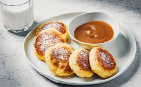

Receptai
Šokoladinis pyragas
Ingredientai: 200g miltų, 100g cukraus, 50g kakavos, 2 kiaušiniai, 100ml pieno
Gaminimo eiga: Sumaišykite ingredientus, supilkite į formą ir kepkite 180°C temperatūroje 30 minučių.
Obuolių pyragas
Ingredientai: 3 obuoliai, 200g miltų, 100g cukraus, 2 kiaušiniai, 100ml aliejaus
Gaminimo eiga: Supjaustykite obuolius, sumaišykite ingredientus, supilkite į formą ir kepkite 180°C temperatūroje 40 minučių.

Vištienos salotos
Ingredientai: 200g vištienos, 100g salotų, 50g pomidorų, 50g agurkų, 2 šaukštai alyvuogių aliejaus
Gaminimo eiga: Supjaustykite ingredientus, sumaišykite ir užpilkite alyvuogių aliejumi.
Makaronai su sūriu
Ingredientai: 200g makaronų, 100g sūrio, 50g sviesto, 100ml pieno
Gaminimo eiga: Išvirkite makaronus, sumaišykite su sūriu, sviestu ir pienu.
Blynai
Ingredientai: 200g miltų, 2 kiaušiniai, 300ml pieno, 50g cukraus
Gaminimo eiga: Sumaišykite ingredientus, kepkite keptuvėje iki auksinės spalvos.
Kreminė avižinė košė
Ingredientai: 1 stiklinė avižinių dribsnių, 2 stiklinės pieno, banana, šaukštas medaus, Saujelė graikinių riešutų
Gaminimo eiga: Avižas virti piene 5min, įmaišyti supjaustytą bananą, pagardinti medumi, riešutais

Lašiša su daržovėmis
Ingredientai: 200g lašišos, įvairios daržovės (brokoliai, morkos, paprika), alyvuogių aliejus, prieskoniai
Gaminimo eiga: Lašišą ir daržoves apšlakstyti aliejumi, pagardinti prieskoniais ir kepti orkaitėje.
Varškėčiai
Ingredientai: 200g varškės, 1 kiaušinis, 2 šaukštai miltų, 2 šaukštai cukraus, aliejus kepimui
Gaminimo eiga: Sumaišyti varškę, kiaušinį, miltus ir cukrų. Formuoti varškėčius ir kepti keptuvėje.
Troškinys su jautiena
Ingredientai: 300g jautienos, bulvės, morkos, svogūnai, pomidorų padažas, prieskoniai
Gaminimo eiga: Jautieną supjaustyti kubeliais ir apkepti. Sudėti pjaustytas daržoves, pomidorų padažą, prieskonius ir troškinti, kol mėsa suminkštės.

Šalta agurkų sriuba
Ingredientai: Agurkai, kefyras, krapai, svogūnų laiškai, kiaušiniai
Gaminimo eiga: Supjaustykite agurkus ir kiaušinius, sumaišykite su kefyru ir žolelėmis. Atšaldykite ir patiekite.

Sumuštinis su avokadu ir kiaušiniu
Ingredientai: Duona, avokadas, kiaušinis, druska, pipirai
Gaminimo eiga: Skrudinkite duoną, sutrinkite avokadą, uždėkite keptą kiaušinį. Pagardinkite druska ir pipirais.
Tiramisu
Ingredientai: Sausainiai "Damų piršteliai", kava, maskarponės sūris, kiaušiniai, cukrus, kakava
Gaminimo eiga: Pamirkykite sausainius kavoje, sluoksniuokite su maskarponės kremu. Pabarstykite kakava ir atšaldykite.

Braškinis tortas
Ingredientai: Biskvitas, grietinėlė, braškės, cukraus pudra
Gaminimo eiga: Ištepkite biskvitą grietinėle, sudėkite braškes. Papuoškite ir atšaldykite.
Šokoladiniai keksiukai
Ingredientai: Miltai, kakava, cukrus, kiaušiniai, aliejus, kepimo milteliai
Gaminimo eiga: Sumaišykite ingredientus, supilkite į formeles ir kepkite orkaitėje.
Ledai
Ingredientai: Pienas, grietinėlė, cukrus, vanilė
Gaminimo eiga: Sumaišykite ingredientus ir užšaldykite ledų gaminimo aparate arba šaldiklyje.
Omletas su sūriu ir daržovėmis
Ingredientai: 2 kiaušiniai, 50g sūrio, įvairios daržovės (paprika, svogūnai, pomidorai), druska, pipirai
Gaminimo eiga: Išplakite kiaušinius su druska ir pipirais, įmaišykite smulkintą sūrį ir daržoves. Kepkite keptuvėje ant nedidelės ugnies, kol omletas iškeps.
Bananų ir riešutų kokteilis
Ingredientai: 1 bananas, 200ml pieno arba jogurto, 1 šaukštas riešutų sviesto, saujelė riešutų, medus pagal skonį
Gaminimo eiga: Sumaišykite visus ingredientus blenderiu iki vientisos masės. Patiekite iškart.
Šaltibarščiai
Ingredientai: 500ml kefyro, 2 virti burokėliai, 1 agurkas, krapai, svogūnų laiškai, 2 virti kiaušiniai, druska, pipirai
Gaminimo eiga: Burokėlius ir agurką sutarkuokite, krapus ir svogūnų laiškus susmulkinkite, kiaušinius supjaustykite. Viską sumaišykite su kefyru, pagardinkite druska ir pipirais. Patiekite šaltus.
Vištienos sriuba su daržovėmis
Ingredientai: 500g vištienos, 2 litrai vandens, 2 morkos, 1 svogūnas, 1 bulvė, petražolės, druska, pipirai
Gaminimo eiga: Vištieną išvirkite vandenyje, nupjaukite putas. Sudėkite pjaustytas daržoves ir virkite, kol jos suminkštės. Pagardinkite druska, pipirais ir petražolėmis.
Makaronų apkepas su sūriu ir kumpiu
Ingredientai: 200g makaronų, 100g kumpio, 100g sūrio, 2 kiaušiniai, 200ml pieno, druska, pipirai
Gaminimo eiga: Makaronus išvirkite. Sumaišykite kiaušinius su pienu, druska ir pipirais. Sudėkite makaronus, pjaustytą kumpį ir tarkuotą sūrį. Kepkite orkaitėje, kol apkepas gražiai apskrus.
Lašiša su keptomis bulvėmis ir šparagais
Ingredientai: 200g lašišos filė, 2 bulvės, 100g šparagų, alyvuogių aliejus, citrina, druska, pipirai
Gaminimo eiga: Bulves supjaustykite skiltelėmis, šparagus nulupkite. Viską apšlakstykite alyvuogių aliejumi, pagardinkite druska ir pipirais. Kepkite orkaitėje kartu su lašiša, kol viskas iškeps. Patiekite su citrinos skiltele.
Vištienos kepsneliai su ryžiais ir salotomis
Ingredientai: 200g vištienos filė, 100g ryžių, įvairios salotos, alyvuogių aliejus, prieskoniai
Gaminimo eiga: Vištieną supjaustykite gabaliukais, apibarstykite prieskoniais ir iškepkite keptuvėje arba orkaitėje. Ryžius išvirkite. Patiekite su salotomis, apšlakstytomis alyvuogių aliejumi.

Daržovių troškinys su avinžirniais
Ingredientai: 200g avinžirnių, 1 morka, 1 svogūnas, 1 paprika, 1 cukinija, pomidorų padažas, prieskoniai
Gaminimo eiga: Avinžirnius išvirkite. Daržoves supjaustykite ir troškinkite keptuvėje su pomidorų padažu ir prieskoniais. Sudėkite avinžirnius ir patroškinkite dar kelias minutes.

Lęšių sriuba
Ingredientai: 1 stiklinė lęšių, 1 morka, 1 svogūnas, 2 skiltelės česnako, 1 litras sultinio, prieskoniai
Gaminimo eiga: Lęšius nuplaukite. Daržoves supjaustykite ir pakepinkite. Sudėkite lęšius, užpilkite sultiniu ir virkite, kol lęšiai suminkštės. Pagardinkite prieskoniais.